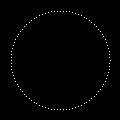
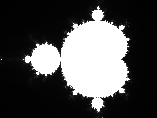

The unary operations are:
Here are a few examples using those operations:
(use-modules (aiscm core))
(- (arr <int> 2 3 5))
;#<multiarray<int<32,signed>,1>>:
;(-2 -3 -5)
(~ (arr <byte> -128 -3 -2 -1 0 1 2 127))
;#<multiarray<int<8,signed>,1>>:
;(127 2 1 0 -1 -2 -3 -128)
(red (to-array (list (rgb 2 3 5) (rgb 3 5 7))))
;#<sequence<int<8,unsigned>>>:
;(2 3)
(green (to-array (list (rgb 2 3 5) (rgb 3 5 7))))
;#<sequence<int<8,unsigned>>>:
;(3 5)
(blue (to-array (list (rgb 2 3 5) (rgb 3 5 7))))
;#<sequence<int<8,unsigned>>>:
;(5 7)
(red (arr 2 3 5))
;#<sequence<int<8,unsigned>>>:
;(2 3 5)
(real-part (arr 2+3i 5+7i))
;#<sequence<int<16,signed>>>:
;(2 5)
(real-part (arr 2 3 5))
;#<sequence<int<8,unsigned>>>:
;(2 3 5)
(imag-part (arr 2+3i 5+7i))
;#<sequence<int<16,signed>>>:
;(3 7)
(imag-part (arr 2 3 5))
;#<sequence<int<8,unsigned>>>:
;(0 0 0)
(conj (arr 2+3i 5+7i))
;#<sequence<complex<int<8,signed>>>:
;(2.0-3.0i 5.0-7.0i)
(conj (arr 2 3 5))
;#<sequence<int<8,unsigned>>>:
;(2 3 5)Applied to the following image …
… inverting the RGB values yields the following image:
(use-modules (aiscm magick) (aiscm core))
(write-image (~ (read-image "star-ferry.jpg")) "inverted.jpg")The binary operations are:
Furthermore there is rgb for composing RGB values which is a ternary method.
Each binary operation can combine arrays and/or scalars. Most scalar-scalar operations are already part of the Scheme programming language. AIscm mostly needs to provide a few numerical operations and some support for RGB and complex values.
One can use an array-scalar operation to divide each colour channels of an image by a number.
(use-modules (aiscm magick) (aiscm core))
(write-image (/ (read-image "star-ferry.jpg") (rgb 1 1 2)) "divided.jpg")Another example is using the modulo operator to show the remainder of division by an integer for each channel.
(use-modules (aiscm magick) (aiscm core))
(write-image (% (read-image "star-ferry.jpg") (rgb 250 200 150)) "modulo.jpg")Each binary operation can appear in scalar-array, array-scalar, or array-array form. Also note that the arrays can have different number of dimensions as long as the tail of the shape matches.
(use-modules (aiscm core))
(define a (arr (1 2 3) (4 5 6)))
a
;#<multiarray<int<8,unsigned>,2>>:
;((1 2 3)
; (4 5 6))
(shape a)
;(2 3)
(define b (arr -1 1))
b
;#<multiarray<int<8,signed>,1>>:
;(-1 1)
(shape b)
;(2)
(+ b 1)
;#<multiarray<int<16,signed>,1>>:
;(0 2)
(+ b b)
;#<multiarray<int<8,signed>,1>>:
;(-2 2)
(- 1 b)
;#<multiarray<int<16,signed>,1>>:
;(2 0)
(* a b)
;#<multiarray<int<16,signed>,2>>:
;((-1 -2 -3)
; (4 5 6))AIscm has a tensor implementation with flexible indexing.
(use-modules (aiscm core) (aiscm tensors))
(define a (arr (2 3 5) (3 5 7)))
(define b (arr 2 3 5))
(define-tensor (transpose a) (tensor j (tensor i (get (get a i) j))))
(transpose a)
;#<multiarray<int<8,unsigned>,2>>:
;((2 3)
; (3 5)
; (5 7))
(define-tensor (add-rows a) (sum-over i (get a i)))
(add-rows a)
;#<multiarray<int<8,unsigned>,1>>:
;(5 8 12)
(define-tensor (add-columns a) (tensor j (sum-over i (get (get a j) i))))
(add-columns a)
;#<multiarray<int<8,unsigned>,1>>:
;(10 15)
(define-tensor (x w h) (tensor (j h) (tensor (i w) i)))
(x 3 2)
;#<multiarray<int<32,signed>,2>>:
;((0 1 2)
; (0 1 2))
(define-tensor (y w h) (tensor (j h) (tensor (i w) j)))
(y 3 2)
;#<multiarray<int<32,signed>,2>>:
;((0 0 0)
; (1 1 1))
(define-tensor (dot a b) (tensor j (sum-over k (* (get (get a j) k) (get b k)))))
(dot a b)
;#<multiarray<int<8,unsigned>,1>>:
;(38 56)
(define-tensor (prod a) (product-over i (get a i)))
(prod (arr 2 3 5))
;30
(define-tensor (s n) (tensor (i n) (sqrt i)))
(s 3)
;#<multiarray<float<double>,1>>:
;(0.0 1.0 1.4142135623730951)Using the warp operation one can perform multi-dimensional warps. Here is a simple example performing a lookup in a pseudo-color table.
(use-modules (oop goops) (aiscm magick) (aiscm core) (aiscm image))
(define colors (to-array (map (lambda (i) (rgb (max 0 (- 255 (abs (- (* i 4) (* 1 64 4)))))
(max 0 (- 255 (abs (- (* i 4) (* 2 64 4)))))
(max 0 (- 255 (abs (- (* i 4) (* 3 64 4)))))))
(iota 256))))
(define img (read-image "star-ferry.jpg"))
(write-image (warp colors (from-image (convert-image (to-image img) 'GRAY))) "pseudo.jpg")A warp can also be used to mirror an array. In this case index arrays are used to define a warp field.
(use-modules (oop goops) (aiscm magick) (aiscm core))
(define img (read-image "star-ferry.jpg"))
(define idx (apply indices (shape img)))
(define width (cadr (shape img)))
(define height (car (shape img)))
(define x (% idx width))
(define y (/ idx width))
(write-image (warp img x (- height 1 y)) "mirror.jpg")One can compute histograms of one or more arrays of coordinates. The following example creates a circle.

(use-modules (aiscm magick) (aiscm core))
(define a (/ (* (indices 100) 2 3.1415926) 100))
(define y (to-type <int> (* 50 (sin a))))
(define x (to-type <int> (* 50 (cos a))))
(write-image (to-type <ubyte> (* (histogram '(120 120) (+ y 60) (+ x 60)) 255)) "circle.png")Masking and unmasking operations are useful to select a subset of array elements. The following example computes a Mandelbrot fractal.

(use-modules (aiscm core) (aiscm magick))
(define (sqr c) (real-part (* c (conj c))))
(define h 240)
(define w 320)
(define idx (indices h w))
(define f (/ 2 h))
(define x (* f (- (% idx w) (/ (* 2 w) 3))))
(define y (* f (- (/ idx w) (/ h 2))))
(define img (fill <ubyte> (list h w) 0))
(define c (+ x (* 0+i y)))
(define z c)
(for-each
(lambda (i)
(let* [(m (lt (sqr z) 4))
(zm (mask z m))
(cm (mask c m))]
(set! img (where m (+ img 1) img))
(set! z (where m (unmask (+ (* zm zm) cm) m) 8))))
(iota 255))
(write-image img "mandelbrot.png")